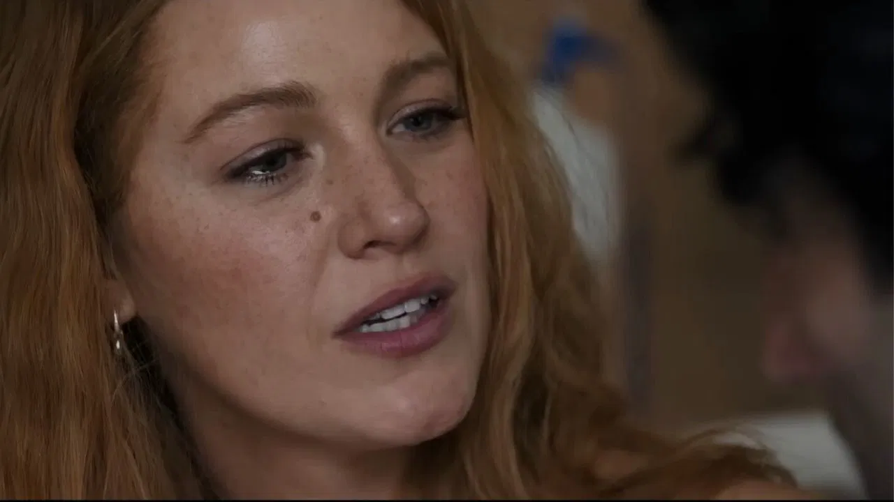
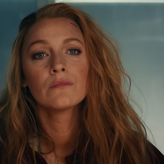

In the spring of 2023, during the filming of “It Ends With Us” in New Jersey, Blake Lively sent her director a text message about what she described as her natural way of relating to people.
Less than two years later, she accused him of sexual harassment. In between, she described him privately as “a rabid pig,” coached co-stars on what to say to producers in the middle of the night, arranged for the author of the source novel to publicly sever her association with him, and emailed one of Hollywood’s most powerful producers to say that everyone Mr. Baldoni had hired “is in a cult.”
In April 2026, a federal judge dismissed ten of her thirteen claims — including the allegation of sexual harassment.
What follows is a reconstruction of what happened in between, drawn from court filings, sworn depositions, and private messages entered into the public record.
‘She Had the Nuclear Bomb’
Ms. Lively, 37, came into “It Ends With Us” with advantages that were not subtle. She had built her career through “Gossip Girl,” “The Town,” and “A Simple Favor,” and had parlayed it into businesses, magazine covers, and more than 45 million Instagram followers. She was married to Ryan Reynolds, whose “Deadpool” franchise had made him one of the highest-paid actors in Hollywood. Taylor Swift was among her closest friends.
Mr. Baldoni, 40, was best known for the CW series “Jane the Virgin.” He co-chaired the studio producing the film and had cultivated a public identity around TED talks on masculinity. He understood, precisely, where the power resided. In a private text to his producer, Jamey Heath, he laid it out plainly.
He was right about the bomb. He was wrong that it had not already gone off.
‘My Love Language’
In November 2023, on the same day the SAG-AFTRA strike ended and production was prepared to resume, a letter arrived from Ms. Lively’s legal team. It contained a list of non-negotiable conditions for her return to set. There were seventeen of them.
Wayfarer had spent months and millions waiting out the strike. The distributor was counting on a finished film. A January meeting followed, attended by Ms. Lively and her husband. Mr. Reynolds had not directed, produced, or appeared in the film. He took a seat at the conference table.
With no viable alternative, the studio signed. The document they signed — framed, in its tone and content, as a response to alleged misconduct during filming — would later become a cornerstone of Ms. Lively’s legal case. At the time they signed it, neither Mr. Baldoni nor Mr. Heath had been told what specific complaint they were responding to, nor given an opportunity to answer one.
‘A Rabid Pig’
Through the summer of 2024, Ms. Lively and Mr. Baldoni appeared together at premieres and sat for joint interviews. In private, the record shows a different posture entirely.
In messages on July 11, 2024, to Colleen Hoover, the novelist whose book had made the film possible, Ms. Lively expressed certainty about her standing in any dispute that might follow.
In the same exchange, she was describing Mr. Baldoni to Ms. Hoover as “a rabid pig.”
Credit... Ms. Lively on the set of “It Ends With Us” in New Jersey, 2023.
What the private record shows, across the months before any complaint was filed, is a deliberate effort to turn the film’s own cast into a set of aligned witnesses. It moved one person at a time.
Ms. Lively had begun with Jenny Slate, who played a supporting role in the film. She told Ms. Slate that she had sensed something troubling in Mr. Baldoni from the beginning and was “aware of a general vibe that I’m not into.” Text messages show her sending Ms. Slate specific talking points before a meeting with a producer — at 12:36 a.m. — with instructions on how to frame her concerns to a third party. Ms. Slate announced her public support for Ms. Lively on the day the complaint was filed.
Her co-star Brandon Sklenar was similarly engaged. In messages unsealed by a federal court in January 2026, Ms. Lively informed him of how she viewed the situation and what she believed the film’s narrative should be.
In the same exchange, Ms. Lively described a comment Mr. Baldoni had allegedly made to Mr. Sklenar on set — in complete, verbatim detail — and then asked whether he remembered it.
Mr. Baldoni, questioned about the remark under oath, denied ever making it. The structure of the exchange — supplying a potential witness with a complete, verbatim account of an alleged incident and then asking whether he recalls it — is consistent with what forensic psychologists describe as a suggested-memory technique, one that reliably produces vague but confident-seeming recollections in subjects already sympathetically disposed toward the questioner.
In a separate exchange during the same period, Mr. Sklenar offered his own assessment of Mr. Baldoni’s professional trajectory. Ms. Lively’s reply suggested she had information he did not.
Ms. Hoover was separately aligned. In October 2024, she unfollowed Mr. Baldoni on Instagram — a move that entertainment media immediately read as a meaningful signal. In a sworn legal filing, Ms. Lively denied asking anyone to take such action. Ms. Hoover, questioned in a sworn deposition, said that Ms. Lively had asked her to.
Credit... Colleen Hoover, who testified under oath that Ms. Lively had asked her to unfollow Mr. Baldoni — directly contradicting Ms. Lively’s sworn denial.
The fourth cast member drawn into the orbit was Isabella Ferreira, who played the film’s lead character, Lily. Ms. Lively held a producer credit on the production; the Producers Guild of America letter establishing her role placed her in a position of formal authority over the cast. Ms. Ferreira later submitted testimony supportive of Ms. Lively’s account of events during filming.
Ms. Lively had also designed the film’s promotional strategy — the one that would become, in the months that followed, a source of conflict within the cast. She framed a movie about domestic violence as a flower-filled celebration of female friendship, encouraging audiences to “grab your friends, wear your florals.” At promotional events for the film, she promoted her own alcohol brand. Mr. Baldoni, excluded from joint promotional appearances, conducted his own press separately. His interviews addressed the domestic violence themes at the center of the novel — the subject that had made the book a phenomenon. When cast members grew frustrated with the tonal gap between the film’s subject and its marketing, the complaint that circulated was that Mr. Baldoni’s domestic violence press appearances were making the rest of them look bad. The strategy that created the gap had been Ms. Lively’s.
‘The Whole Cast Hates Him’
The campaign extended well beyond the film’s cast. By the spring and summer of 2024, Ms. Lively and Mr. Reynolds had been working their separate networks across the industry — reaching into Hollywood’s upper tiers, securing institutional backing at the distributor level, and laying the groundwork for a coordinated press operation that would culminate on a single day in December.
In May 2024, Ms. Lively sent an email to Ben Affleck — the actor and producer — asking him to screen her cut of the film. In the email, she described Mr. Baldoni as “the chaotic clown ‘director’/actor/producer/financier/studio head at the center,” wrote that everyone he had placed on the production “is in a cult,” and said that making the film had “nearly killed me.” Mr. Affleck did not respond. In the same month, Ms. Lively and Mr. Reynolds contacted Matt Damon with the same request; Mr. Damon replied that he would offer “any help we can.” No complaint had been filed. No investigation was underway.
At the corporate level, Sony Pictures had backed Ms. Lively’s version of the project at every stage. With Sony’s support, she had produced her own cut of the film, bringing in new editors and a new composer. Sony released that version. As the film’s release approached, Ms. Lively and other cast members informed Sony and Wayfarer that they would not appear alongside Mr. Baldoni in any promotional capacity.
In July 2024, “Deadpool & Wolverine” arrived in theaters. The film featured a character named “Nicepool” — a long-haired male feminist who lectures extensively on masculinity and is, across multiple scenes, killed repeatedly. The killing blow is delivered each time by the character voiced by Ms. Lively herself. When Mr. Baldoni later cited this in his lawsuit, Mr. Reynolds’s legal team filed a motion dismissing the complaint as “thin-skinned outrage over a movie character.”
The press operation was run by Leslie Sloane, Ms. Lively’s publicist. Over the summer of 2024, Ms. Sloane had been speaking to reporters off the record, planting early versions of the narrative before any formal allegation had been made. On August 8, a reporter from The Daily Mail reached her with questions about a reported rift between the stars. According to court filings, Ms. Sloane had told Mr. Baldoni’s publicist, Stephanie Jones, that she would not speak to the press. She sent the following messages nine minutes later.
No complaint had been filed. No investigation had been conducted. The articles that followed shaped public opinion about Justin Baldoni weeks before any legal process had begun.
‘Go Full Ari’
In private messages disclosed during litigation, Ms. Lively described her husband and Ms. Swift as her most trusted allies. She called them her “dragons.”
Mr. Reynolds moved first on the industry front. He contacted Ms. Lively’s representatives at WME and instructed them to go, in his words, “full Ari” on Mr. Baldoni — a reference to WME’s chief executive, Ari Emanuel, whose reputation as a bare-knuckle dealmaker was the basis for the fictional agent in HBO’s “Entourage.” He also prepared a public statement and transmitted it to Mr. Baldoni for his signature, demanding the director take full responsibility for the negative press Ms. Lively had received.
IT ENDS WITH US was a troubled production which we take full accountability for. We are very sorry to everyone we caused upset to privately and publicly. Blake Lively, Colleen Hoover, the entire cast and crew led with professionalism every step of the way, any negativity aimed at them is ours to own.
Mr. Baldoni refused. His publicist told the crisis team that he needed to “lawyer up now.”
Credit... Ms. Lively and Mr. Reynolds. In legal filings, the two are described as having coordinated the campaign together from its earliest stages.
On December 20, 2024, Ms. Lively filed her complaint with California’s Civil Rights Department. The following morning, The New York Times published a front-page investigation under the headline “‘We Can Bury Anyone’: Inside a Hollywood Smear Machine.” The piece drew on documents Ms. Lively’s legal team had gathered through subpoena. That same day, Ari Emanuel personally announced that WME had dropped Mr. Baldoni. The largest talent agency in Hollywood had acted within twenty-four hours of a complaint it could not have reviewed.
The complaint, the front page, the agency: each arrived on the same day.
Ms. Swift’s involvement, as those days approached, had become difficult to characterize as passive. In messages disclosed during litigation, she had advised Ms. Lively on placing her music in the film’s trailer as a way of giving Ms. Lively “more power over the film.” By mid-December 2024, as The Times was finalizing its investigation, Ms. Swift appeared to know something was coming.
‘A Fully Nude Woman’
What the complaint itself contained was as significant as its timing.
In her December 2024 filing, Ms. Lively described a moment from the first week of filming in which Jamey Heath, Wayfarer’s chief executive, showed her a video on his phone. In her sworn account, the video depicted “a fully nude woman with her legs spread apart.” She characterized it as an act of sexual misconduct.
The actual video was filed as evidence by Mr. Baldoni’s legal team. It showed Ms. Heath — Mr. Heath’s wife — cradling her newborn daughter. The baby’s cries are audible from the first frame. Ms. Heath is submerged in water and covered by a towel throughout. Mr. Heath had asked if Ms. Lively would like to see it; she said yes; he showed her a one-second clip before moving on. The interaction lasted less than thirty seconds.
A separate discrepancy concerned the complaint’s account of a conversation with a Sony executive in May 2023. Ms. Lively claimed she had contacted Sony specifically to file a formal HR complaint and had been told the studio was powerless to act. The Sony executive’s account, relayed to Wayfarer at the time, was different: Ms. Lively had said the complaints were not sexual in nature, that she did not want to file formally, and that she only wanted the men to be more mindful going forward.
That conversation took place in May 2023. Ms. Lively’s formal complaint arrived nineteen months later.
‘Reasonable in Scope’
Three months before she filed her complaint, Ms. Lively’s legal team filed a quiet lawsuit in New York state court. The plaintiff was not Blake Lively. It was a Delaware shell company called Vanzan Inc., for which she served as chief executive. The purpose was to obtain subpoena power over the private communications of Mr. Baldoni’s former publicist — without the involvement of a federal court.
Vanzan Inc., it later emerged, was not in good standing with the State of New York. It had not filed a single biennial statement since its 2019 incorporation and had missed three consecutive required filings. Under New York law, a delinquent corporation is not authorized to file lawsuits. The documents gathered through the Vanzan subpoena became the foundation of The New York Times’ December investigation.
The reach of the legal operation extended further. Over the course of 2025, Ms. Lively’s legal team issued subpoenas to more than one hundred independent content creators across YouTube, TikTok, and X — the majority of whom had not spoken publicly about the case until after Ms. Lively herself had made the dispute public. The subpoenas did not go to the creators directly. They went to the platforms: Google, TikTok, and X were served with demands for user data that included home addresses, IP addresses, phone numbers and SIM card details, social network contacts, and — through GooglePay — bank account and credit card numbers. The TikTok subpoena also sought blockchain wallet addresses.
One of the targets was McKenzie Folks, a stay-at-home mother from Kansas with a small TikTok account. “This is totally a scene out of a movie,” she told Variety. “Some millionaire actress coming after someone. It’s very daunting.” Attorney John Genga, representing several creators, told the same publication that the subpoenas were “designed to intimidate these people, many of whom don’t have the means to fight it.”
When the subpoenas were challenged in court, they were withdrawn — one by one. Subpoenas targeting YouTubers Katie Paulson and Kjersti Flaa were dropped in July 2025 after both filed motions to quash. Three additional YouTubers saw their subpoenas withdrawn the same week. Perez Hilton’s subpoena was withdrawn in September 2025 after the ACLU took his case; Ms. Lively’s team stated they had “received the materials they needed.” In each instance, the withdrawal came only after the target had retained legal counsel and mounted a formal challenge — a process that cost each of them thousands of dollars in legal fees for information a federal court would ultimately determine Ms. Lively did not need. Discovery requests also sought footage belonging to Natasha Heath, recorded at a hospital during childbirth. Ms. Lively’s team described that request, in a court filing, as “reasonable in scope.”
According to court filings, Ms. Lively had also demanded that Wayfarer delete the daily production footage from filming after she began to anticipate litigation. Under oath, she denied making any such demand. Text messages disclosed in discovery showed that she had.
Among those drawn into the operation was Kjersti Flaa, a Norwegian journalist who had interviewed Ms. Lively years earlier. In that interview, Ms. Lively had remarked on Ms. Flaa’s “little bump” — an unsolicited personal comment directed at a woman she had just met. When The Times published its December investigation, it named Ms. Flaa as part of a coordinated campaign against Ms. Lively. Ms. Flaa had never communicated with Mr. Baldoni, his team, or any of the publicists named in the article. She had posted a clip of the interview in which Ms. Lively had been dismissive and rude to her. A federal subpoena for her private communications arrived shortly after.
‘All Women and Children’

Credit... The New York Times front-page investigation, published December 21, 2024, the morning after Ms. Lively filed her complaint.
Mr. Baldoni sued The New York Times for $250 million, alleging the paper had “cherry-picked” his communications and presented texts “stripped of necessary context.” The Times said it stood by its reporting.
What the courts returned was a different accounting. In April 2026, Judge Lewis J. Liman of the Southern District of New York dismissed ten of Ms. Lively’s thirteen claims. Of the allegations that had generated more than a year of front-page coverage, three survived. The centerpiece claim — sexual harassment — did not. The court found that Ms. Lively was an independent contractor who had exercised “substantial control far exceeding that of a traditional employee” and was therefore not covered by the employment statutes she had cited.
Ms. Lively had alleged that Mr. Baldoni, during the filming of a slow-dancing scene, had leaned in as if to kiss her, kissed her forehead, rubbed his face against her neck, and put his thumb to her mouth. The judge acknowledged that such conduct would be actionable in a conventional workplace. But Mr. Baldoni, he wrote, was “acting in the scene.”
“Creative artists, no less than comedy room writers, must have some amount of space to experiment within the bounds of an agreed script without fear of being held liable for sexual harassment,” the judge wrote.
Months earlier, Mr. Baldoni’s legal team had produced a deleted scene in which Ms. Lively, without advance discussion, kissed Mr. Baldoni in a hospital hallway — a full mouth kiss, unscripted. The scene had been cut from the film. It was not mentioned in her complaint.
Ms. Lively’s lawyers had told the court she would testify for “all women and children.” Thirteen days before a scheduled jury trial, the parties reached a settlement. No money changed hands. No admission was made. No nondisclosure agreement was signed. She appeared at the Met Gala the following week.
‘You Won. You Did It.’
For Mr. Baldoni, the accounting came long before any judge ruled on anything. He was dropped by WME within twenty-four hours of a complaint the agency could not have reviewed. He was the subject of a front-page investigation the following morning. Three of the four “Sisterhood of the Traveling Pants” co-stars — Ms. Lively’s longtime friends — released coordinated public statements against him. His $250 million lawsuit against The Times and his $400 million countersuit against Ms. Lively and Mr. Reynolds were both dismissed. He had lost in the court of public opinion before most of the public had finished reading the headline.
The consequences extended beyond Mr. Baldoni. Mr. Sklenar found himself publicly attached to a narrative he had barely participated in. Ms. Hoover was required to contradict her close friend under oath. Ms. Slate was positioned as a corroborating witness before she had any independent basis to corroborate. Ms. Flaa, a Norwegian journalist who had posted a clip of an interview, received a federal subpoena for her private communications.
“She needed bodies,” said one entertainment publicist, who requested anonymity to discuss sensitive professional relationships. “She got them. And when it was over, nobody asked whether they’d been told the truth.”
In February 2025, Ms. Lively’s team announced a new adviser: Nick Shapiro, a former deputy chief of staff at the Central Intelligence Agency. His role, according to a spokesperson, was to “advise on the legal communications strategy.”

Credit... The public relations operation against Mr. Baldoni spanned multiple firms and advisers, according to court filings reviewed by The Times.
When public opinion shifted in Ms. Lively’s favor after the December article, Ms. Swift sent her assessment.
In the text message that gave this account its title, Blake Lively described her preferred mode of engaging with Justin Baldoni as “spicy and playfully bold.”
Never with teeth.
What the record shows — across thousands of pages of text messages, depositions, and court filings assembled over two years of litigation — is that this was a promise she extended to no one. From the first weeks of production, she had mapped the terrain, positioned her allies, and prepared a version of events that would require someone to be buried. The complaint, the front page, the agency drop: each arrived on schedule. The teeth had always been there. She had simply chosen, for a time, not to show them.